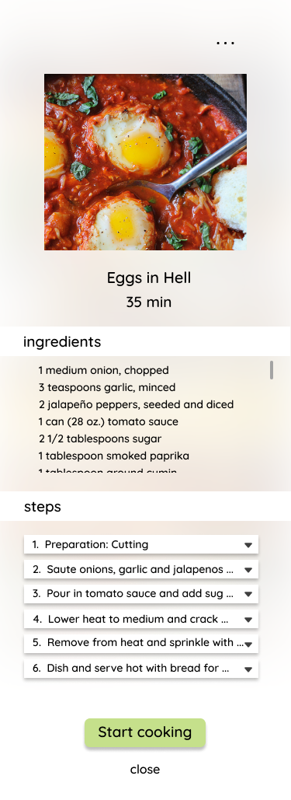

Recipeasy: Mobile App
Recipeasy
“Offering visually guided recipes for the average home-cook”
Homecooks need an easy and intuitive way to store, create, and follow recipes to
increase their efficiency in the kitchen, while also having an enjoyable cooking experience.
The purpose of Recipeasy is to provide the average homecooker with an organized system of storing, creating and following recipes. The main focus is on the guided recipe style, intended to make following recipes more hands off and personalized.
Many apps on the market exist for recipe storing and sharing, but not many have good recipe guidances (if any). For the most part, recipes are purely text based and either handwritten or hosted on websites. These recipe websites/apps often don’t offer any pacing or personalized guidance.
Recipeasy combines visual and audio cues to allow the user to progress easily through the steps in a recipe. Users can also customize and pace their own recipes and save them for later.
Recipeasy was designed to have clean and modern interface, with a neutral color aesthetic, and minimalist design to emulate the stlye of a modern kitchen.
Personas
1. College student, novice/intemediate cooking skill. Long term useage
2. Older single homecook, intermediate/advanced cooking skill. Medium useage
3. Couples/ group setting following recipe for one time use
My primary audience are people cooking solo at home, with intermediate experience in the kitchen. The age demographic is catered towards young adults in college who are just learning to cook for themselves and need a helping and motivating hand. Recipeasy is meant for long term regular usage, ideally a few times a week.
Our secondary audience targets more advanced solo cooks that are familiar with cooking, but are looking for a simple and intuitive interface to make the cooking process smoother, and a way to easily document their own experiences/recipes.
The age demographic would likely be for an older audience. Usage would range more around several times a month, depending on how frequently the cook is exploring new recipes.
Recipeasy mainly targets single people, or people that cook solo because the guidance and experience are personalized.
However, it is possible that a pair or group of people use this app together to cook however the outcome may not be as efficient.
In the future, Recipeasy could account for group collaboration and allow multiple users to follow the same guidance at once and check off tasks they have done and stay up to date on progress. However, this app is currently targeted toward solo homecooks.
Process
I created an empathy map for my primary persona, and started to lay out the structure of the interface, using key actions I wanted to include.
Key Features
Homepage:
The user is welcomed by the homepage with three simple options. The first option is
to continue cooking the recipe you left off. If there is no recipe in progress, it will just be a greeting. The second action is to go to the saved recipes directory. The third option is to create a new recipe.
Stored Recipes:
In the stored recipes section, users have the option of editing the existing groups
(edit icon at the top): reordering them, renaming them, or deleting them (not prototyped). They also are able to create new recipe groups from the plus icon. The three groups across the top will remain there for easy access and serve as default categories.
When clicking into a specific recipe group for example Favorites, the user has the option of filtering recipes by preferences (not prototyped). The user is also able to add recipes from other groups.
Recipe Information:
When clicking on a specific recipe for example “Eggs in Hell”, a page will pop up with
the full image, a scrollable ingredients section, and a steps section with expandable accordion steps.
When clicking on the three dots icon at the top right, the user can edit the recipe, relocate it to another recipe group, delete, or share the recipe on social media.
Back to the recipe information, clicking “start cooking” will open up the recipe guidance.
Recipe Guidance:
The recipe guidance section has multiple features and communicators. The user is
able to see their progress from the progress bar at the top and the minutes of cooking they have left. At the top right, the apple icon will show a list of all ingredients needed as a side pop up. The microphone icon to its left will toggle voice control on and off. The main visuals will be the action being performed, a timer if needed, and heat level if needed as well. The background image will be a generic image that corresponds to the command (like “cut” or “boil”).
Below the main image/visuals, there will be a chronological list of next steps that the user can expand and see details. The user will also be able to check (turn green) the tasks they have done to track their progress.
Voice Control:
Not only can the user pause, play, and skip to the next/previous step, but these
commands also have to ability to be voice controlled. Saying “stop”, “pause”, or “next” are some basic spoken commands that enable hands free interaction, a huge benefit when cooking and having messy hands and will free the user from being chained to the phone.
Create New Recipe:
The user can create their own recipes by filling in accordion drop down fields like
the name of the dish, the ingredients and their quantities, and adding steps for the recipe.
Wireframes
